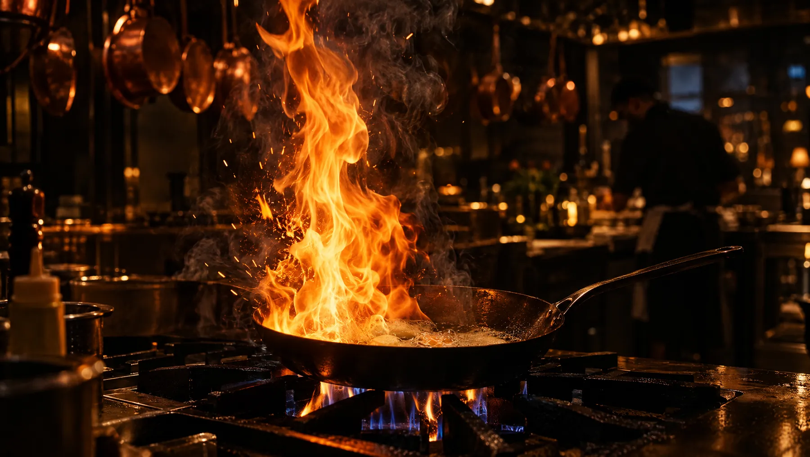
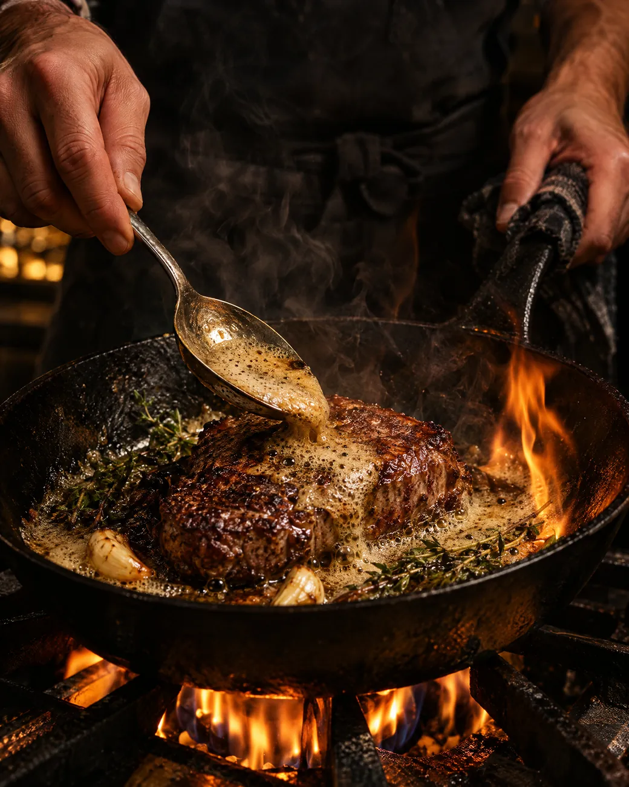
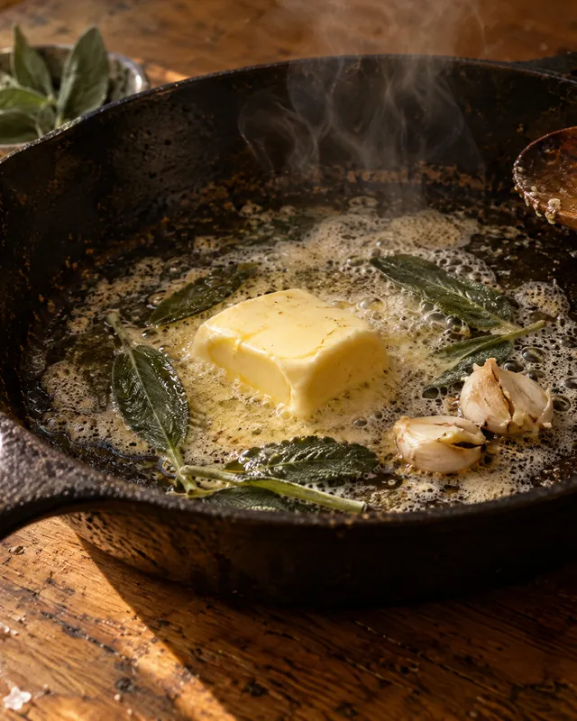

История
Всё началось
со сковороды
Одна кухня, один повар и пачка хорошего сливочного масла.


«На масле всё вкуснее». Так шеф сказал в первый день, и так мы готовим до сих пор.
В 2019 году Данила открыл маленькую кухню на Садовой. Восемь столов, одна печь, меню на доске мелом. Он жарил на сливочном, тушил на оливковом и говорил гостям, что секрета нет, просто масло должно быть хорошим.
Гости приходили за сырниками, потом за цыплёнком, потом приводили друзей. Через два года понадобилась вторая кухня, потом третья. Меню при этом не разрослось. Мы держим его коротким, чтобы каждое блюдо получалось одинаково в любой точке.

Шеф
Я не люблю, когда еду объясняют. Её надо есть, пока горячая.Данила Ветров
Учился у бабушки и в двух ресторанах, где порции были меньше ложки. Решил, что хочет кормить по-настоящему. Каждое утро обходит все четыре кухни и пробует соусы.
Три правила кухни
Держимся их
с первого дня

Масло хорошее
Сливочное 82%, оливковое первого отжима, топлёное варим сами. Никакого маргарина, даже в тесте.
Хлеб свой
Закваске семь лет. Печём на Садовой и развозим по точкам к восьми утра.

Сезон решает
Летом томаты, осенью тыква и свёкла. Меню меняем четыре раза в год, хиты остаются.
Как росли
Четыре кухни
за шесть лет
- 2019
Садовая
Восемь столов и печь. Здесь появились наши сырники.
- 2021
Липовая
Нашли двор с липами и не смогли пройти мимо.
- 2023
Набережная
Большие окна, долгие завтраки, детский уголок.
- 2025
Литейный
Самая вечерняя из четырёх. Свечи зажигаем в шесть.
Приходите
голодными
Остальное расскажем за столом.
Забронировать стол